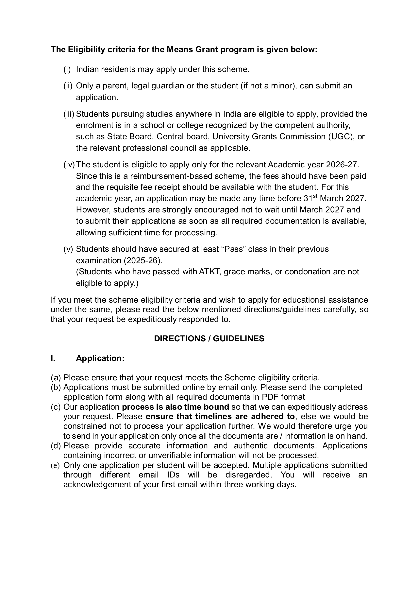
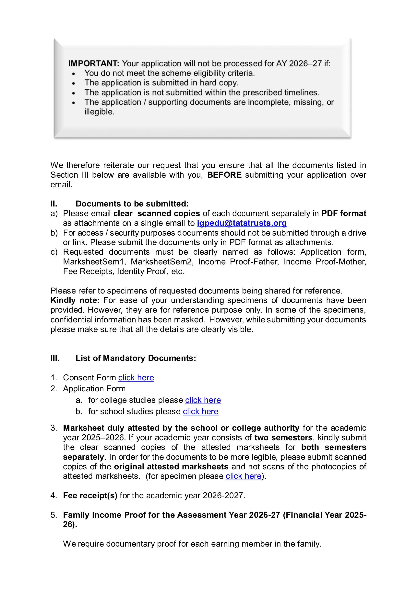
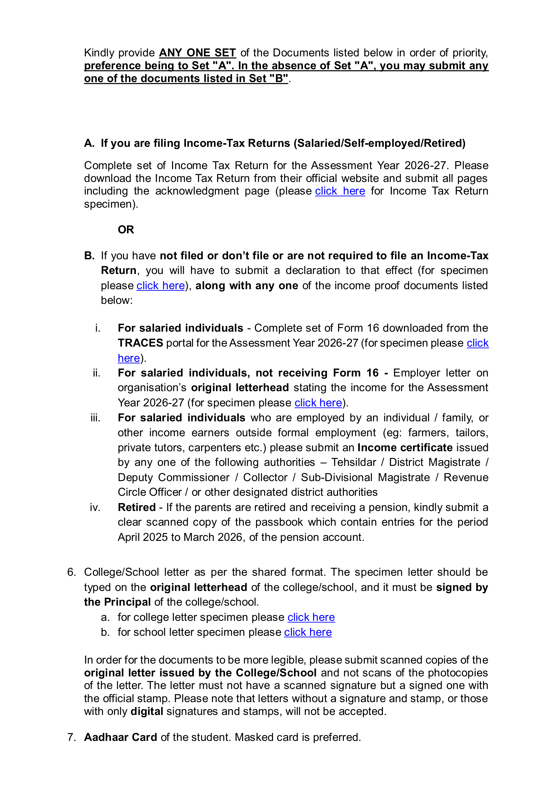
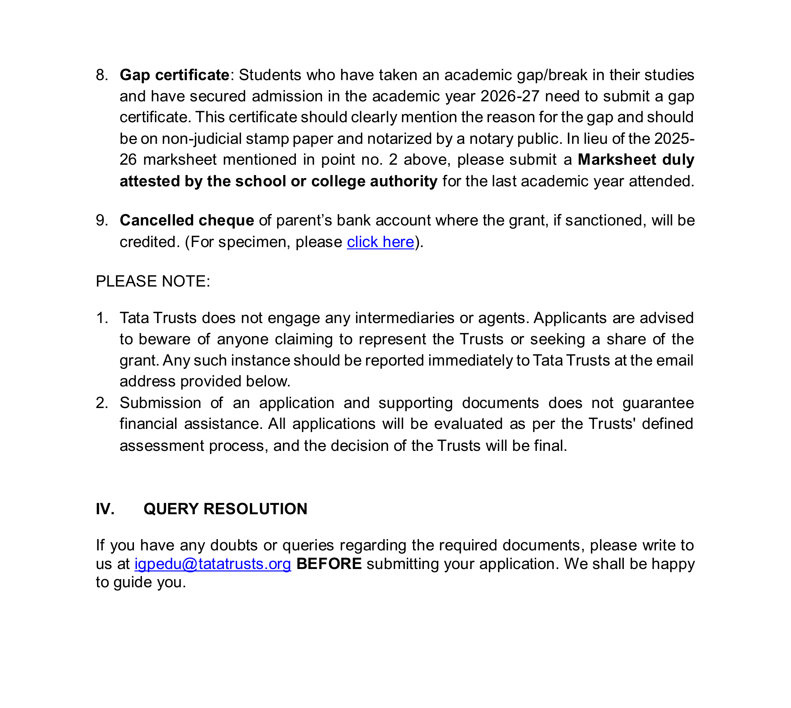
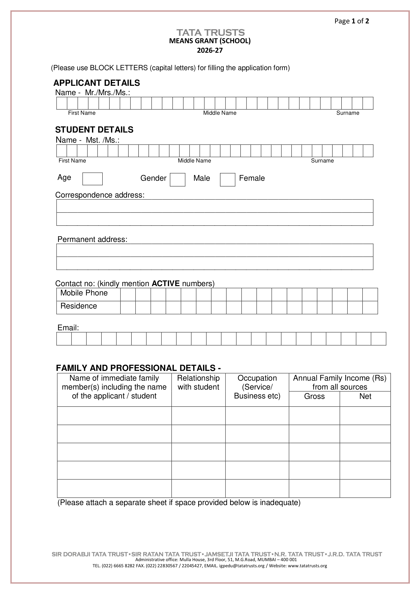
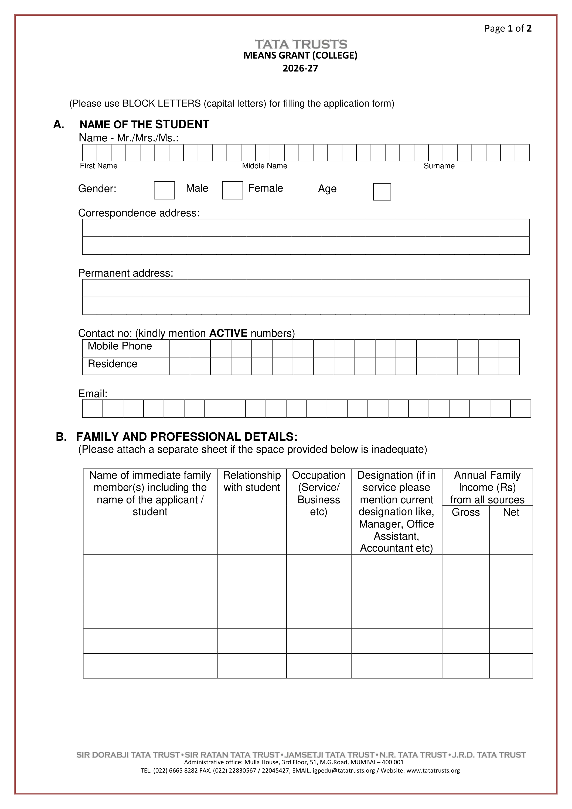

Tata Trusts Means Grant 2026-27
Need-based partial support for school and college fees you have already paid. For Indian residents studying from Class VIII through graduation.
Apply early once your full document set is ready. Do not wait until March.
Who can apply?
- Indian residents studying anywhere in India.
- School students from Class VIII onwards and college students up to graduation, according to the sponsor webpage.
- Enrolment must be in an institution recognised by the relevant board, UGC or professional council.
- The previous examination, normally 2025-26, must have been passed. Students passing with ATKT, grace marks or condonation are not eligible under the directions.
- Only a parent, legal guardian, or the student if not a minor can submit the application.
- The application must concern 2026-27 and fees already paid, supported by receipts.
The college form has a generic degree-example field that mentions Masters. Do not treat that field as an extension to postgraduate eligibility: the sponsor webpage describes support only up to graduation. Ask the Trusts before applying outside that published scope.
View official eligibility page

Official directions page 1: eligibility, reimbursement, timing and one-application rule. Direct PDF render, not a browser screenshot. Checked 25 November 2026. Tap to enlarge.
How to apply, step by step
- Open the official Education Grants page and find Means Grant. Do not follow the nearby medical scholarship or loan-scholarship instructions.
- Read the four-page Means Grant directions. Prepare the full document set before sending anything.
- Download the consent form and the correct two-page school application or college application. Fill the form in capital letters, complete both pages and sign/date it. For a minor, the appropriate parent/guardian must act; read the consent form before signing.
- Get the institution letter on original letterhead, using the linked school specimen or college specimen. It must carry the Principal's actual signature and official stamp, not a pasted/scanned signature or only digital signatures/stamps.
- Scan each required document clearly as a separate PDF attachment. Use useful filenames such as ApplicationForm, MarksheetSem1, FeeReceipts and IncomeProofFather.
- Send one complete email with all attachments to igpedu@tatatrusts.org. The guidelines do not accept Drive links or other document links, and hard-copy applications are not processed. Only one application per student is accepted; multiple email-ID submissions are disregarded.
- The directions say an acknowledgement of the first email should arrive within three working days. This is an acknowledgement, not an award. Keep your sent email and attachments. For uncertainty or a missing acknowledgement, use the official query address rather than sending duplicate applications.
View official application directions

Official directions page 2: one email, separate PDF attachments, forms and initial document list. Direct PDF render. Checked 25 November 2026. Tap to enlarge.
Your document checklist
- Completed consent form and the correct school/college application form.
- Previous-year marksheet attested by the school/college authority. If the year has two semesters, include both separately. Scan the original attested documents clearly, not photocopies of attested photocopies.
- Fee receipts for 2026-27.
- Income proof for every earning family member for Assessment Year 2026-27, Financial Year 2025-26.
- School/college letter on original letterhead with Principal's signature and official stamp.
- Student Aadhaar. The directions specifically prefer a masked Aadhaar.
- Cancelled cheque of the parent's bank account, as the directions specify for credit if sanctioned. Do not substitute another scheme's student-account rule. If you are an adult or do not have an available parent account, ask the Trusts what they accept before sending.
- If you took an academic break and rejoined in 2026-27: a gap certificate explaining the reason, on non-judicial stamp paper and notarised, plus the attested marksheet from the last year attended instead of the normal 2025-26 marksheet.
Income proof: choose the correct route
The guidelines prefer Set A: the complete Income Tax Return for AY 2026-27, all pages including acknowledgement. If you have not filed, do not file or are not required to file, use the declaration specified in Set B plus the applicable proof:
- Complete Form 16 from TRACES for a salaried earner, or an employer letter on original letterhead if no Form 16 is received.
- For informal earners, such as farmers, tailors or private tutors: an income certificate from a listed competent district/revenue authority.
- For a retired parent receiving pension: clear pension-account passbook entries for April 2025 to March 2026.
Use the specimens linked in the official PDF. This guide does not invent a household-income ceiling. The form asks for gross/net income and other expected, sanctioned or received educational funding, so declare those accurately. Do not import the medical scholarship's separate funding exclusions into this scheme.
View official income-proof requirements

Official directions page 3: income-proof alternatives, institution-letter requirements and masked Aadhaar preference. Direct PDF render. Checked 25 November 2026. Tap to enlarge.
Privacy and common mistakes
The consent form covers the applicant's information and relevant family/third-party information. Read it and obtain applicable consent before sharing others' documents. Send sensitive documents only through the official application route, not to AiCoN, comment threads or unofficial scholarship agents.
Tata Trusts says it has no intermediaries or agents and warns against anyone demanding a share of a possible grant. Avoid missing/illegible files, wrong academic-year receipts, incomplete forms, document links instead of attachments, and duplicate applications. The directions do not list a universal email attachment-size limit, so do not invent one. Ask the Trusts if a complete legible set exceeds your email provider's limit.
View official gap / payment requirements

Official directions page 4: gap cases, parent-account cheque, no-agent warning and query contact. Direct PDF render; only lower blank space cropped, final 2120 × 1900. Checked 25 November 2026. Tap to enlarge.
English and Malayalam video guides
No reliable current-cycle English or Malayalam application walkthrough was verified in this check. Use the official directions and blank forms. They were retrieved and read; no application email, personal documents or account details were submitted by us.
മലയാളത്തിൽ പ്രധാന വിവരങ്ങൾ
ടാറ്റ ട്രസ്റ്റ്സ് മീൻസ് ഗ്രാന്റ് 2026-27: ഇന്ത്യയിൽ പഠിക്കുന്ന ഇന്ത്യൻ താമസക്കാർക്ക്, എട്ടാം ക്ലാസ് മുതൽ ബിരുദം വരെയുള്ള പഠനത്തിന് ആവശ്യകത അടിസ്ഥാനമാക്കിയുള്ള ഭാഗിക സഹായം. ഫീസ് അടച്ചതിന്റെ രസീതുകൾ വേണം. പൂർണ ഫീസോ നിശ്ചിത തുകയോ ഉറപ്പുനൽകുന്ന പദ്ധതിയല്ല.
സ്കൂൾ/കോളേജ് അപേക്ഷാ ഫോമും സമ്മതപത്രവും ആവശ്യമായ എല്ലാ രേഖകളും തയ്യാറാക്കിയ ശേഷം, ഓരോ രേഖയും പ്രത്യേകംPDF അറ്റാച്ച്മെന്റാക്കി ഒറ്റ ഇമെയിലിൽ igpedu@tatatrusts.org എന്ന വിലാസത്തിലേക്ക് അയയ്ക്കണം. ഡ്രൈവ് ലിങ്കുകൾ സ്വീകരിക്കില്ല. 2027 മാർച്ച് 31ന് മുമ്പ് അപേക്ഷിക്കണം; അവസാന സമയം വരെ കാത്തിരിക്കരുത്. പ്രായപൂർത്തിയാകാത്ത വിദ്യാർത്ഥിക്കായി രക്ഷിതാവോ നിയമപരമായ ഗാർഡിയനോ അപേക്ഷിക്കണം.
Official sources and scope
- Tata Trusts Education Grants: current application status, school Class VIII through graduation, need-based partial support.
- Means Grant directions: all four pages visually inspected, including eligibility, documents, email route and before 31 March timing.
- Linked 2026-27 school/college application forms, consent and institution-letter specimens: downloaded and read. The blank form images below are evidence, not filled applications.
View blank school form

Blank official 2026-27 school application, page 1. Shows separate applicant/student and family information. Direct PDF render. Checked 25 November 2026. Tap to enlarge.
View blank college form

Blank official 2026-27 college application, page 1. Complete both pages using the official download. Direct PDF render. Checked 25 November 2026. Tap to enlarge.
Evidence images are official PDF renders at least 2119 × 2998, except the disclosed blank-space crop on page 4. They are not desktop screenshots or poster screenshots. No personal details were entered. Linked documents and current guidance were checked 25 November 2026; no acknowledgement, eligibility outcome or grant delivery was tested. The published documents checked here do not state an application fee.